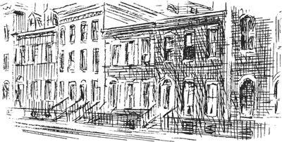
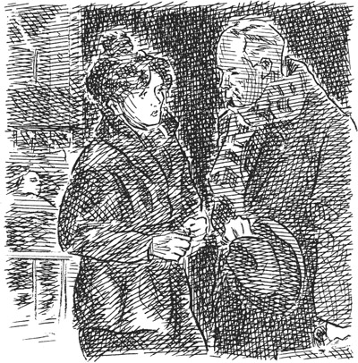
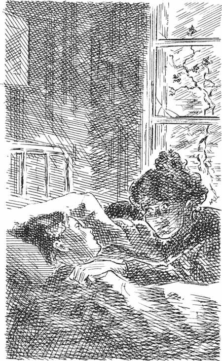
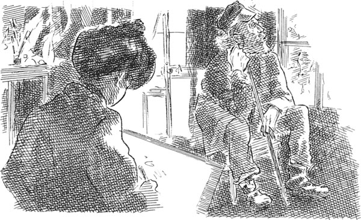

Listen to Part 1:
Vào những năm 1890, có rất nhiều nghệ sĩ sống tại Greenwich Village, New York City.
Sue và Johnsy là những nghệ sĩ. Họ gặp nhau lần đầu vào tháng Năm, tại một nhà hàng ở Greenwich Village.
‘Tôi đến từ tiểu bang Maine,’ Sue nói với Johnsy. ‘Tôi vẽ tranh minh họa cho truyện trên tạp chí.’
‘Tôi đến từ California,’ Johnsy nói với Sue. ‘Nhưng tôi rất muốn đến Ý. Tôi mong muốn được vẽ bức tranh về vịnh Naples nào!’
Họ đã trò chuyện vui vẻ trong một tiếng đồng hồ – về nghệ thuật, về quần áo và về đồ ăn.
Không lâu sau lần gặp gỡ đầu tiên, Sue và Johnsy đã chuyển đến ở chung trong một căn hộ chung cư. Căn phòng của họ là căn phòng cao nhất trong một căn hộ gạch cũ của ngôi nhà Village.

_____
Tháng mười hai ở New York, thời tiết trở nên giá lạnh. Tuyết rơi, mặt đất đóng băng. Rất nhiều cư dân thành phố đã phát bệnh. Đó là bệnh viêm phổi. Các bác sĩ đã hết sức cứu chữa nhưng bệnh tình của họ đều không được cải thiện.
Listen to Part 2:
Tháng đó, Johnsy mắc bệnh viêm phổi. Cô ốm rất nặng. Cô nằm trên giường và không muốn cử động. Hằng ngày, bác sĩ đều đến khám cho Johnsy. Nhưng tình trạng của Johnsy vẫn không có tiến triển khả quan.
Một buổi sáng, bác sĩ đứng ngoài phòng bệnh Johnsy nhẹ nhàng trò chuyện với Sue.
‘Tôi không thể giúp cô ấy nữa,’ bác sĩ nói. ‘Cô ấy quá yếu. Cô ấy chẳng còn muốn sống nữa. Chúng ta cần ai đó làm cho cô ấy vui lên. Cô ấy thích gì vậy?’

‘Cô ấy là một họa sĩ,’ Sue trả lời. ‘Cô ấy luôn mong muốn được vẽ một bức tranh về Vịnh Naples.’
‘Vẽ tranh ư!’ bác sĩ nói. ‘Điều đó không giúp ích được gì cho cô ấy đâu!’
Bác sĩ đi khỏi căn phòng.
Sue vào phòng khóc thầm trong vài phút. Sau đó, cô cầm lấy giá vẽ cùng vài cây bút chì. Cô bắt đầu hát bài hát mà mình yêu thích và bước vào phòng Johnsy.
Johnsy đang nằm im trên giường. Khuôn mặt cô tái xanh. Cô nhìn hướng ra cửa sổ.
‘Johnsy ngủ rồi,’ Sue thầm nghĩ.
Listen to Part 3:
Cô ngừng hát và ngồi xuống một góc trong phòng. Bắt đầu vẽ một bức tranh minh họa cho một tạp chí. Bỗng, Sue nghe thấy tiếng động nhỏ. Cô nhanh chóng chạy đến bên giường. Đôi mắt Johnsy đang mở. Cô ấy nhìn ra ngoài cửa sổ, rồi thì thào.
‘Mười hai,’ Johnsy nói. Lát sau, cô nói ‘Mười một’. Sau đó là ‘Mười’. Rồi ‘Chín’. Và sau đó, cô nói ‘Tám’, rồi ‘Bảy’ liên tục. Cô ấy đang đếm ngược.
Cô ấy đang nhìn gì thế? Đang đếm những gì thế? Sue nhìn ra ngoài cửa sổ.
Bên ngoài cửa sổ, Sue nhìn thấy bức tường gạch của ngôi nhà bên cạnh. Một cây thường xuân cổ thụ bám vào tường. Trên cành cây không còn sót lại bao nhiêu lá.
‘Sáu,’ Johnsy nói. ‘Lá đang rụng nhanh quá. Ba ngày trước còn gần một trăm chiếc. À, lại một chiếc nữa rụng kìa! Giờ chỉ còn năm chiếc thôi.’
‘Năm chiếc? Cô đang nói gì vậy, Johnsy?’ Sue hỏi. ‘Có chuyện gì thế, nói cho tôi biết đi.’
‘Chỉ còn năm chiếc lá trên cây thường xuân,’ Johnsy nói. ‘Khi chiếc lá cuối cùng rụng xuống thì tôi sẽ chết. Bác sĩ không nói cho cô biết chuyện những chiếc lá kia sao?’
‘Đừng nói vậy! Cô sẽ không chết đâu!’ Sue đáp lại. ‘Cô sẽ khỏe lại thôi. Sáng nay, bác sĩ vừa nói với tôi rồi mà. Tôi sẽ lấy cho cô bát súp và tiếp tục vẽ bức tranh của mình. Tạp chí sẽ trả tiền cho tôi sớm thôi. Rồi chúng ta sẽ mua một ít thức ăn ngon.’
Johnsy vẫn nhìn ra bên ngoài. ‘Chỉ còn bốn chiếc lá thôi,’ cô nói. ‘Tôi không muốn ăn súp. Chiếc lá cuối cùng sắp lìa khỏi cành rồi.’
‘Cô bạn thân Johnsy,’ Sue nói. ‘Hãy nhắm mắt lại và ngủ đi. Ngày mai, tôi sẽ phải hoàn thành bức vẽ này thôi. Và tôi cũng không muốn cô cứ nhìn vào những chiếc lá kia nữa.’
Listen to Part 4:
Johnsy nhắm mắt lại. ‘Nhưng tôi muốn nhìn thấy chiếc lá cuối cùng rụng xuống,’ cô vẫn khăng khăng. ‘Nó sắp rụng rồi. Lá cũng mệt lắm. Tôi cũng mệt quá. Tôi muốn được chết.’
‘Hãy cố ngủ đi,’ Sue nói. ‘Tôi sẽ nói chuyện với ông Behrman một lát. Tôi cần ông ấy làm mẫu cho bức vẽ của mình.’
Ông già Behrman sống ở tầng dưới. Ông cũng là một nghệ sĩ, nhưng ông chưa từng vẽ được một bức họa đẹp nào. Điều đó đã khiến ông luôn buồn phiền và tức giận.
‘Một ngày nào đó, tôi sẽ vẽ được một kiệt tác,’ ông Behrman nói. ‘Một ngày nào đó, tôi sẽ vẽ nên một kiệt tác.’

Nhưng ông đã không bao giờ thực sự vẽ nên một kiệt tác. Và ông đã hơn sáu mươi tuổi rồi.
Sue tìm thấy ông già nhỏ tuổi trong căn phòng tối om của ông. Cô kể cho ông về Johnsy và những chiếc lá trên cây thường xuân.
‘Ồ, con bé ngốc nghếch!’ ông Behrman thốt lên. ‘Một cây thường xuân thì không thể giết người được!’
‘Nhưng những chiếc lá thậtđang giết chết Johnsy,’ Sue nói. ‘Cô ấy rất ốm và yếu. Cô ấy nhìn cây thường xuân rụng lá. Và rồi cô ấy cũng muốn chết.’

Listen to Part 5:
Mặc dù rất tức giận, ông Behrman lại rất quý hai cô gái trẻ.
‘Ồ, cô bé Johnsy,’ ông nói nhẹ nhàng. ‘Cô ấy quá ngây thơ. Một ngày nào đó, tôi sẽ vẽ nên một kiệt tác. Rồi cả ba chúng ta sẽ đến Ý. Chúng ta sẽ đến Naples. Đúng vậy! Nhưng hôm nay, tôi sẽ làm mẫu cho cô.
Họ cùng nhau lên tầng. Johnsy vẫn đang ngủ. Sue kéo tấm màn che xuống và che cửa sổ phòng ngủ của cô bạn. Sau đó, cô dẫn ông Behrman vào phòng mình. Họ cùng hướng ra cửa sổ nhìn cây thường xuân. Bầu trời đang mưa phùn.
‘Sắp có tuyết rơi rồi,’ Sue thầm nghĩ.
Ông Behrman ngồi xuống, Sue bắt đầu vẽ ông.
_____
Đêm đó, có một cơn bão. Mưa rất to, gió rất mạnh.
Sáng hôm sau, Johnsy tỉnh dậy rất sớm. ‘Kéo tấm màn cửa lên đi,’ cô nói với Sue.
Sue kéo tấm màn lên. Trên cây thường xuân vẫn còn một chiếc lá! Chiếc lá có màu xanh đậm pha vàng. Nó ở trên cành cây cao khoảng sáu mét so với mặt đất.
‘Đó là chiếc lá cuối cùng,’ Johnsy nói. ‘Hôm nay nó sẽ rụng xuống. Và khi đó tôi cũng sẽ chết.’
Listen to Part 6:
Sue áp mặt vào mặt bạn mình.
‘Đừng nói vậy, Johnsy,’ cô nhẹ nhàng nói. ‘Tôi không muốn cô chết.’
Johnsy không trả lời.
Suốt cả ngày hôm đó, chiếc lá vẫn bám chặt lấy cành cây. Đêm đến, gió và mưa càng dữ dội.
Sáng hôm sau, Johnsy lại tỉnh dậy rất sớm. ‘Kéo tấm màn cửa lên đi,’ cô nói.
Chiếc lá vẫn bám trụ ở đó. Johnsy nằm trên giường và nhìn chiếc lá trong một lúc. Sau đó, cô gọi Sue.
‘Tôi thật ngốc phải không, Sue,’ cô nói. ‘Tôi đã rất muốn được chết. Nhưng chiếc lá cuối cùng vẫn bám lấy cành cây. Nó đã dạy cho tôi một bài học. Hãy mang cho tôi một bát súp đi.’
Một giờ sau, Johnsy lại nói.
‘Sue, cô bạn thân của tôi,’ cô nói. ‘Một ngày nào đó, tôi sẽ vẽ một bức tranh về Vịnh Naples!’
_____
Listen to Part 7:
Vào buổi trưa, bác sĩ đến thăm hai cô gái. Ông đã khám cho Johnsy rất kỹ lưỡng và nắm lấy bàn tay gầy guộc của Sue.
‘Hãy chăm sóc bạn của cô ấy thật tốt,’ ông nói. ‘Tình hình của cô ấy đã được cải thiện. Bây giờ, tôi phải xuống phòng dưới. Tôi cần đến thăm ông Behrman. Ông ấy cũng bị viêm phổi. Tôi phải đưa ông ấy đến bệnh viện.’
_____
Sáng hôm sau, bác sĩ đến nói chuyện với Sue.
‘Bạn cô sắp hồi phục rồi,’ ông nói. Sau đó, ông kể thêm một vài điều nữa.
Chiều hôm đó, Sue vào phòng và ôm lấy Johnsy.
‘Ông Behrman đã mất sáng nay tại bệnh viện,’ cô kể lại. ‘Cách đây hai hôm, một người hàng xóm tìm thấy ông trong phòng ngủ. Lúc đó, ông ấy rất yếu. Giày và quần áo của ông ấy ướt đẫm và lạnh ngắt. Người hàng xóm đó đã gọi bác sĩ. Sau đó, người ta tìm thấy một chiếc thang bên ngoài sân. Gần đó có một chiếc đèn. Bên cạnh có bút vẽ và một số lọ sơn màu vàng, màu xanh lá cây.
‘Johnsy, hãy nhìn ra ngoài cửa sổ,’ Sue nói nhẹ nhàng. ‘Nhìn chiếc lá cuối cùng kìa. Nó vẫn ở đó. Chiếc lá không hề nhúc nhích trước gió. Cô không thấy ngạc nhiên sao? Đó chính là kiệt tác của ông Behrman. Ông đã vẽ chiếc lá đó vào buổi đêm bão tố.’